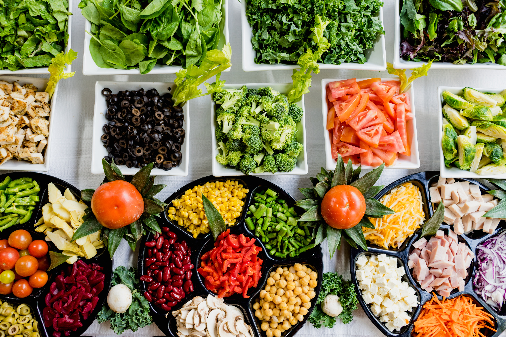
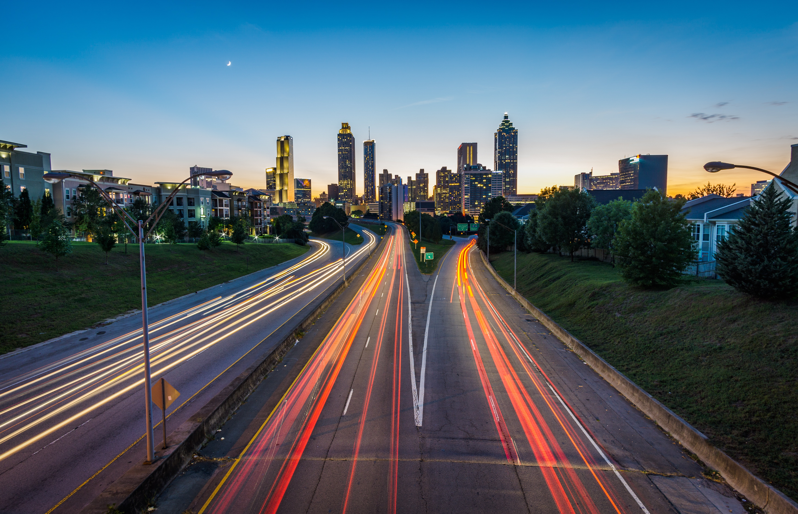
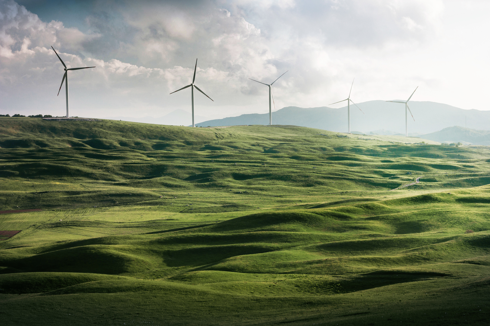

What does it mean to live a more sustainable lifestyle?
This is a question we have been asking ourselves since before we founded TerraMundo.
So what does it mean to consume mindfully and live a sustainable lifestyle?
Sustainable living is often described as a lifestyle that attempts to reduce an individual’s or
society’s use of the Earths natural resources, and one’s personal resources.
There is no such thing as ‘away’. When we throw anything away it must go
somewhere.
– Annie Leonard
At MundoTerra we firmly believe in the difference each and every one of us can make and ensuring
the sustainability of our impact on nature and we are here to help you in making your day-to-day
more sustainable as well.
We understand that on the surface it can be incredibly daunting to reduce your environmental
footprint, especially when you see that others around you are not doing their part. But when you
break it down into small steps, you realise you have more power than you thought.
This is why we broke the sustainable lifestyle into 3 categories:
Food
Transport
Energy
Have a look and discover what you can do today to live a more sustainable lifestyle.
Food: 8 ways to live a more sustainable lifestyle

Buy as much seasonal produce as you can
If you’re craving a an exotic ingredient such as mango but you are having a hard time
finding it at the supermarket, take it as a sign from Mother Earth herself.
Go with the delicious produce that’s in season instead, because that’s the best way to
support local farmers and businesses.
Eat less animal products
Eating vegan just one day a week does way more for the planet than eating locally
sourced foods seven days a week.
Going vegan means you cut your carbon footprint in half, since it takes an immense
amount of natural resources to mass produce animal products.
Even if you don’t commit to living the vegan life 100 percent of the time, though, you
could make a big difference by eating only plant-based foods a couple days each week.
Buy fair trade
When you buy fair trade foods, you’re supporting a cause that’s invested in improving
the working conditions of farmers and holding farms accountable for the environmental
standards they must comply with.
Whether it’s a small chocolate bar or a box of cereal, buying fair trade means you’re
purchasing products that were made with no GMOs, and with sustainably sourced soil and
water. Bonus: Most fair trade products are also organic.
Compost your food waste
We were taught not to waste food at a young age, so rather than tossing out food scraps
into the same bins that hold household garbage, we could all start composting.
Even if you don’t have a home garden where the compost could be put to use, there are
plenty of places that will benefit from your compost.
You’ll reduce civic costs for waste collection, decrease your carbon footprint, and keep
your leftovers out of landfills.
Start a little garden of your own
You wouldn’t believe how little land it takes to create a garden.
All you need is a small patch of earth (or even a window box) to grow a few things, like
tomatoes, greens, and herbs.
Growing your own grub reduces how much food mileage you imprint on the earth, as well as
how many resources are used to get the food to your table.
If you live in an oversaturated city, look for community garden spaces where you can
participate.
You could have your own produce ready to bring into your kitchen in just a few weeks.
Shop for bulk items
Start buying in bulk more often. You’ll waste less packaging and the food you get will
have required less transportation to get to you.
Research conducted by the U.K. Bulk is Green Council shows that if all everyone in the
U.K.purchased bulk items once a week, we would save 26 million pounds of waste going into a
landfill in one month alone. Plus, you’d save some money, too.
Ask for the "ugly" fruits and vegetables
Research shows that anywhere between 20 and 40 percent of produce in the U.K. goes to
waste because it’s not good looking enough for shoppers.
That’s a pretty big waste of resources, time, money, and, well, food.
If you don’t see any of the “ugly” produce on display at your supermarket (which is a
common occurrence), ask one of the employees if they have any “ugly” fruits and veggies in
the back that didn’t make the cut.
You’ll save perfectly healthy and nutritious food from going to waste.
Eat less processed and packaged foods
Surprisingly enough, fruits, vegetables, and nuts only take up two percent of the U.K.’s
crop acreage at the moment, while 60 percent of it is devoted to cereal grains that are
harvested for packaged foods and edible oils, both of which have very low nutritional value.
The result is that we’re unknowingly eating a lot of food that’s made mostly from soy
and corn, both of which waste a lot of resources to make and take over land that could
instead be used for fresh produce.
The less processed and packaged foods we all eat, the less demand there will be for such
products, and hopefully we’ll start to see a lot more land set aside for growing fresh
produce that’s going to improve our health.
Transport: Drive less

Walk for short trips
Walking helps reduce body fat, lower blood pressure and is free. It may also take less time
than you think.
Studies have shown that most people will underestimate time related to car journeys and
overestimate the time it will take to walk. The average walking pace is six kilometres per
hour and if you walk you don’t need to find a car bay when you arrive.
Cycle instead
Switching a ten kilometre journey per week from your car to your bike will burn around 300
calories each way and can save over 300 kilograms of greenhouse gas emissions each year.
Plan your journey
Use a journey planner to check if there is convenient active transport option for a trip you
take regularly.
Consider car-pooling
Car-pooling is a great way to share costs of fuel and parking and to break the monotony of
your daily commute.
Check your ticket
Tickets for many major sporting and cultural events include free public transport to and
from the event. Skip the hassle of traffic and parking.
Think ahead
Bundle a number of small errands into one trip to save time and fuel.
Consider if a phone call, email or letter would do instead.
Have a local adventure
Next time you are planning an outing or holiday, consider having some fun close to home.
Make low emissions a priority
When purchasing a vehicle use the government's Green Vehicle Guide to compare the fuel
efficiency, greenhouse and safety ratings of the vehicles you are considering.
Energy: Choose wild energy

Kicking the fossil fuel habit is critical to saving wildlife, slowing climate change and
protecting our lands and waters.
If your state allows you to pick your electricity supplier, use a Green-e certified company that
generates at least half its power from wind, solar and other clean sources.
Also explore the options — and tax credits — for installing rooftop solar panels or solar water
heating in your home. Depending on your productivity, you can even add clean power to the grid,
further offsetting your carbon footprint.